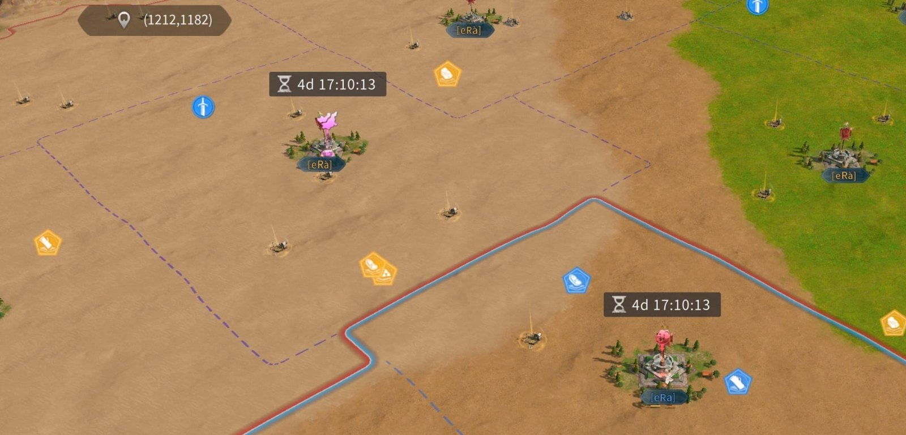
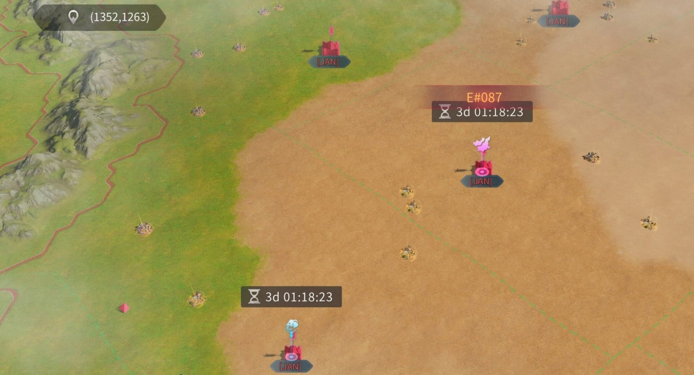

BEHEMOTH CONQUEST
Two servers clash, Behemoth vs Behemoth. Earn Awaken Runestones to grow ours, then invade the enemy while defending our own. Highest total score wins — but both sides earn Behemoth Crystals, so play even from behind.
Trial windows are fixed daily; only the invasion time & location are admin-set — watch alliance chat.
Siege scores ~0.3 kingdom pts per durability — 2,812,500 pts per attack at the Adult rate. Grew Juvenile → Adolescent → Adult as the Behemoth was cultivated.
M:P = merit÷power (combat activity). Their #4 and #7 (102–103%) are the real threats — small but battle-hardened; their power leaders (#1–2) have thin merit and fold under pressure. Alliance totals favour us too (~20B vs ~15.5B).
What happens
- Our server is paired against an enemy server — Behemoth vs Behemoth for the whole event.
- No invasions yet — scout the enemy Behemoth (toggle it on the lineage screen) and plan donations.
Do today
- Nothing to farm yet — runestones unlock in Stage 2 (Day 2).
- Invasion time & location lock before the end of Day 3.
Goal
- Earn Awaken Runestones daily and donate them to grow our Behemoth before the invasion.
- Donating tips Bloodline Purity our way and earns 10 personal points per runestone.
📅 Daily schedule — Trial of Scion
Four fixed 30-min windows daily (UTC+0). Blue = on #008 (ours), red = on #087. Cross-border tiles open during our windows — zeroing risk.
⚖ Bloodline Purity race
| Blessing | Buff | US · #008 | #087 | ||
|---|---|---|---|---|---|
| I | II | I | II | ||
| Undying Force | Revive at 0 HP | 3 stk | – | 3 stk | – |
| Wild Healing | Hospital cap & heal speed | +700K/50% | – | +700K/50% | – |
| Wild Damage Increase | Damage dealt | +2.5% | +5% | +2.5% | +5% |
| Wild Attack | Attack | +5% | +10% | +5% | +10% |
| Wild Defense | Defense | +5% | +10% | +5% | +10% |
| Wild Health | Health | +2.5% | +5% | +2.5% | +5% |
| Rally Attack | Rally attack | +5% | – | +5% | – |
| Rally Defense | Rally defense | +5% | – | +5% | – |
| Wild Rally | Dmg reduction vs rallied | +5% | – | +5% | – |
| Iron Hoof | Behemoth durability dmg | +625 | +1,250 | +625 | +1,250 |
| Mobile Fortress | Behemoth health | +250K | +500K | +250K | +500K |
| Behemoth's Blessing | Voluntary: 4,000 pts + 20 contrib / runestone | ∞ | – | ∞ | – |
Do each day (Days 2–4)
- Trial of Scion — farm Scions in the 30-min window for runestones & eliminations.
- Cultivation Exploration — 3 open at each of 04:00 / 12:00 / 20:00, 18 runestones each.
- Rally vs Tribes — join every called rally. Days 2 & 4 only.
- Donate as you go — don't hoard.


💰 Runestone income — daily caps
| Source | Daily cap | When |
|---|---|---|
| Scion damage | 400 | Days 2–4 |
| Scion eliminations (nearby) | 250 | Days 2–4 |
| Cultivation Exploration | 162 | 9×18 · Days 2–4 |
| Rally vs Tribes | 100 | Days 2 & 4 |
| Alliance Rally vs Tribes | 200 | Days 2 & 4 |
Damage and eliminations are capped and mailed separately. Maxing everything across the 3 days = 3,036 runestones.
What happens
- Each Behemoth invades the other server at the locked time & location. Each invasion lasts 90 minutes.
- The invading Behemoth wrecks citadels and alliance buildings. Unlimited range, ignores shields — bubbling won't protect your city.
- Be online for the window — this is where the bulk of the score (and personal points) is won.
🗺 Battlefield Map
Each map shows one server as home with the invading Behemoth at its spawn. Unlimited range, ignores shields — no city is safe (orange = under fire). Home rallies it down; visitors counter-rally to keep it scoring. Toggle to flip between #008 and #087.
📍 Where the Behemoth spawns on #008

📍 Where our Behemoth spawns on #087

⚔ Attacking the enemy Behemoth
- Only rallies damage it (1,000/sec each — per rally, not per march). More separate rallies = more damage; keep as many on it as possible.
- Hold rallies long — after 5 min, damage ramps +500 every 15s. Don't let them disband.
- Relocate to the enemy server to join the offense.
❤ The stun / Undying Force cycle
- At 0 HP it burns 1 Undying Force stack, disbands all rallies, dazes for 30s (can't attack), then revives full. Dies only when all stacks are gone.
- 3 stacks → ~4 zeroes to kill. Coordinate fresh waves to re-zero the moment it revives.
- Defenders: zeroing theirs scatters their rallies and stops their scoring.
🎯 How points are scored
| Action | Points |
|---|---|
| Our Behemoth: per 1K durability dmg to a citadel | 300 kingdom |
| Per 100 dmg to the enemy Behemoth | 80 kingdom |
| Deplete one enemy Undying Force stack | 1,000,000,000 |
| Completely defeat an enemy Behemoth | 5,000,000,000 |
| Invasion end: per 1K of our Behemoth's remaining HP | 2,000,000 |
Do this before the window closes
- CLICK CLAIM — get 35% of lost units back, but only if you claim. People forget and lose it all.
- Reach the 65% cap with Recovery Tickets (max 20) and allies spending recovery tokens on you (ask in alliance chat).
- No recovery after this stage. Spend leftover Behemoth Crystals first.